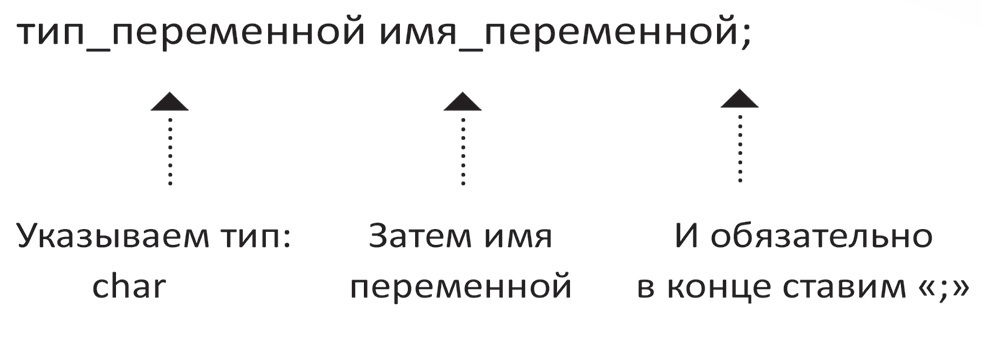

ЩОДЕННИК
На вигляд більш-менш пристойний, в майбутньому планую додати функціоналу. Поки що наповнення на різну тематику і не структуроване
Теги
#diary, #html, #css, #js, #c, #linux, #git, #LoNG, #arduino, #javaE, #DDT, #careerkhpi, #jobfair, #activecitizens, #kharkiv_eco_city, #life_others
#diary, #html, #css, #js, #c, #linux, #git, #LoNG, #arduino, #javaE, #DDT, #careerkhpi, #jobfair, #activecitizens, #kharkiv_eco_city, #life_others
Переменная
Переменная - это некоторый контейнер, в котором может храниться значение для дальнейшего использования в программе:
Примитивные типы
| byte, int, long | 0 |
| float, double | 0.0 |
| char | \0 |
| boolean | false |
| String | null |
 Штриховой линией отмечены разрешенные автоматические преобразования, которые при определенных значениях переменной могут выполняться с потерей информации.
Штриховой линией отмечены разрешенные автоматические преобразования, которые при определенных значениях переменной могут выполняться с потерей информации.


При вычислении результата операции OR по полной схеме ("|") всегда вычисляются оба операнда.

Операция && очень часто применяется с целью избежать выполнения выражения, составляющего второй операнд, в том случае, когда его выполнение может выбросить исключение при определенном условии; это условие учитывается в первом операнде.
Классы-обёртки
Массивы
Строки
--- ~LINKS~ ---
1. Презентация: Data types, variables, operators.Теги: #java